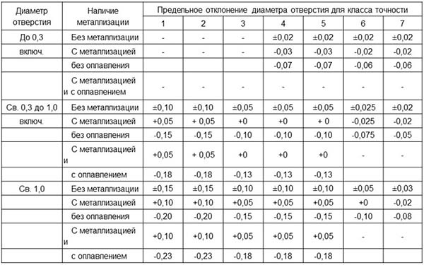

Односторонние печатные платы
Односторонняя печатная плата (ОПП) - это плата (рис. 1), имеющая одно изоляционное основание, на одной из сторон которого выполнен токопроводящий печатный рисунок. ОПП характеризуются:
- возможностью обеспечения повышенных требований к точности выполнения проводящего рисунка;
- отсутствием металлизированных отверстий;
- установкой изделий электронной техники (ИЭТ) на поверхность печатной платы на стороне, противоположной стороне пайки;
- низкой стоимостью.
Рис. 1. Односторонняя печатная плата:
Hп — толщина ПП; hф — толщина фольги; l — расстояние между центрами (осями) элементов конструкции ПП
Двухсторонние печатные платы
Двухсторонняя печатная плата (ДПП) имеет одно изоляционное основание, на обеих сторонах которого выполнен токопроводящий рисунок (рис. 2). Допускается использование объемных металлических конструкций (отрезки проволоки, арматура переходов по ГОСТ 22318-77 и т. п.) для соединения элементов проводящего рисунка, расположенного на противоположных сторонах печатной платы. При использовании перемычек их общее количество не должно быть более 5% от общего количества печатных проводников.
Рис. 2. Двухсторонняя печатная плата:
- Q — расстояние от края печатной платы, выреза, паза до элементов проводящего рисунка;
- S — расстояние между проводниками;
- t — ширина проводника;
- b — расстояние от края просверленного отверстия до края контактной площадки (поясок);
- D — диаметр контактной площадки;
- d — диаметр отверстия;
- Hп — толщина ПП;
- Hм — толщина материала основания ПП;
- Hп.с — суммарная толщина ПП с химическим и гальваническим покрытием
Двухсторонние печатные платы бывают двух типов:
- без металлизации монтажных и переходных отверстий;
- с металлизированными монтажными и переходными отверстиями.
ДПП второго типа характеризуются высокими коммутационными возможностями, повышенной прочностью сцепления выводов навесных ИЭТ, высокой стоимостью.
Многослойные печатные платы
Многослойная печатная плата (МПП) — это плата (рис. 3), состоящая из чередующихся слоев изоляционного материала с проводящими рисунками на двух или более слоях, между которыми выполнены требуемые соединения. Электрическая связь между проводящими слоями может быть выполнена специальными объемными деталями, печатными элементами или химико-гальванической металлизацией отверстий.
Рис. 3. Многослойная печатная плата
Многослойные ПП характеризуются повышенной надежностью и плотностью монтажа, устойчивостью к климатическим и механическим воздействиям, уменьшенными размерами и меньшим числом контактов. Вследствие большой трудоемкости их изготовления, сложности получения высокой точности рисунка и совмещения слоев, высокой стоимости и сложности технологического оборудования, контроля на всех операциях технологического процесса (ТП), низкой ремонтопригодности МПП применяют для уже отработанных конструкций электронно-вычислительной, авиационной и космической аппаратуры. Гибкая печатная плата, гибкий печатный кабель, гибко-жесткие платы — качественно новые несущие конструкции и системы меж соединений, которые применяются взамен «громоздких» жестких ПП, плоских ленточных проводов, жгутов и объемных проводников.
Гибкие печатные платы
Гибкая печатная плата (ГПП) — ПП, имеющая гибкое основание или ПП, использующая гибкий базовый материал (рис. 4). Гибкая ПП является аналогом жесткой ПП по расположению печатных проводников, контактных площадок и других элементов печатного монтажа, по размещению ЭРИ, при этом она имеет гибкое основание толщиной 0,1−0,5 мм, может изгибаться, работать на перегибы и принимать разную форму.
Рис. 4. Гибкая печатная плата
Гибкие ПП применяются в случаях, когда плата в процессе эксплуатации подвергается многократным изгибам, вибрациям или, когда ей необходимо придать для работы изогнутую компактную форму (поместить в небольшой объем). При помощи ГПП можно соединять различные элементы ЭА, используя ответвления от общего основания ГПП. Основным отличием ГПП от жесткой ПП является возможность монтажа в трехмерном пространстве и огибания углов других блоков. Гибкие ПП могут изготавливаться в комбинации с жесткими ПП.
Вы можете на нашем сайте заказать любую трассировку печатных плат и комплект чертежей к ним. Ваше задание вы можете выслать сюда.
Выбор размеров печатных плат
Размеры и конфигурацию печатной платы выбирают в зависимости от установочных размеров ИЭТ, условий эксплуатации, использования автоматизированных методов установки навесных ИЭТ, пайки и методов контроля.
В соответствии с ГОСТ 2.307-78 размеры на чертеже печатной платы указывают одним из следующих способов:
- 1 - нанесением координатной сетки в прямоугольной системе координат;
- 2 - нанесением координатной сетки в полярной системе координат;
- 3 - комбинированным способом: при помощи размерных и выносных линий и координатной сетки в прямоугольной или полярной системе координат.
Координатную сетку на чертеже следует наносить на все поле печатной платы или рисками по периметру контура печатной платы.
При задании размеров нанесением координатной сетки все линии сетки должны нумероваться. Допускается не наносить линии координатной сетки или наносить их через определенные интервалы. Допускается наносить линии координатной сетки через одну, при этом в технических требованиях чертежа записывают пояснения типа: «Линии координатной сетки нанесены через одну».
В соответствии с ГОСТ 10317-79 основной шаг координатной сетки 2,5 мм, дополни тельные – 1,25мм; 0,625мм (0,5мм).
В соответствии с ГОСТ 10317-79 размер каждой стороны печатной платы должен быть кратным:
- 1) 2,5 мм при длине стороны 100 мм;
- 2) 5 мм при длине стороны 350 мм;
- 3) 10 мм при длине стороны более 350 мм.
Максимальный размер любой из сторон печатной платы должен быть не более 470 мм. Соотношение линейных размеров сторон печатной платы должно быть не более 3:1. Количество типоразмеров печатных плат следует ограничивать. Рекомендуется разрабатывать платы прямоугольной формы.
Стандарт ГОСТ Р53429-2009 устанавливает 7 классов точности печатных плат в соответствии со значениями основных параметров и предельных отклонений элементов конструкции.
Рекомендуемые области применения классов точности согласно ГОСТ Р53429-2009:
- 1-й и 2-й класс применяются для печатных плат с дискретными ИЭТ при малой и средней насыщенности поверхности печатной платы навесными элементами;
- 3-й класс применяется для печатных плат с микросхемами и микросборками, имеющими штыревые и планарные выводы, а также с без выводных элементов ИЭТ при средней и высокой насыщенности печатной платы навесными элементами;
- 4-й класс применяется для печатных плат с ИМС, имеющими штыревые и планарные выводы, а также с без выводными ИЭТ при высокой насыщенности поверхности печатной платы навесными ИЭТ.
Наименьшие номинальные значения основных размеров элементов конструкции печатных плат для узкого места в зависимости от класса точности приведены в таблице 1.
|
Таблица 1 - Классы точности печатных плат  |
Допуски на линейные размеры сторон выбирают по ГОСТ 25346-82 и ГОСТ 25347-82.
За нуль (начало координат (НК)) в прямоугольной системе координат принимают (рис. 5):
Рис. 5. Начало координат печатной платы:
- а – начало координат – левый нижний угол платы;
- б – начало координат, образованное линиями построения.
Центры всех отверстий на чертеже печатной платы, включая крепежные, должны располагаться в узлах координатной сетки. Центры отверстий для многовыводных ИЭТ располагаются в соответствии с размерами, указанными в документации на эти изделия. В этом случае центр отверстия, принятого за основное, располагается в узле координатной сетки, а остальные – по чертежу.
Размеры и конфигурацию крепежных и технологических отверстий выбирают в соответствии с ГОСТ 11284-85, а размеры монтажных, переходных и не металлизированных отверстий - в соответствии с ГОСТ 10317-79.
При любом варианте установки ИЭТ диаметры монтажных, переходных, металлизированных и не металлизированных отверстий рекомендуется выбирать из следующего ряда:
0,4; 0,5; 0,6; 0,7; 0,8; 0,9; 1,1; 1,2; 1,3; 1,4; 1,5; 1,6; 1,7; 1,8; 2,0; 2,1; 2,2; 2,3; 2,4; 2,5; 2,6; 2,7; 2,8; 3,0 мм.
Стандарт ОСТ 4.070.010-78 содержит рекомендации для выбора диаметров отверстий и контактных площадок под выводы устанавливаемых ИЭТ (таблица 2).
Таблица 2 - Диаметры отверстий и контактных площадок
| Диаметр вывода элемента | Диаметр отверстия | Диаметр контактной площадки | Минимальное расстояние между центрами отверстий |
|---|---|---|---|
| 0,4; 0,5 0,6; 0,7 |
0,9 1,1 |
3,0 3,0 |
2,5 2,5 |
| 0,8; 0,9 1,0; 1,1 1,2; 1,3; 1,4 |
1,3 1,5 1,8 |
3,0 3,0 3,0 |
3,75 3,75 3,75 |
| 1,5; 1,6 1,7; 1,8; 1,9 |
2,0 2,2 |
4,0 4,0 |
5,0 5,0 |
Диаметры монтажного отверстия необходимо выбирать больше диаметра вывода на 0,5 мм. Отверстия под выводы ИМС навесных элементов зенкуют с двух сторон. ИЭТ, имеющие прямоугольные выводы, устанавливаются в круглые отверстия. Установочные, проходные и технологические отверстия не имеют контактных площадок.
Толщину основания печатной платы определяют в зависимости от условий эксплуатации (ГОСТ 16019-2001), механических нагрузок на печатную плату, ее конструктивных особенностей и необходимо увязывать с диаметром используемых отверстий в соответствии с ГОСТ 23751-86.
Шероховатость поверхности монтажных не металлизированных отверстий и торцов печатной платы рекомендуется выбирать
RZ < 80, металлизированных отверстий - Rz< 40 (ГОСТ 2.309-73).
Контактные площадки должны быть прямоугольной, круглой или близкой к ним формы. Для обозначения первого вывода многовыводного ИЭТ контактную площадку выполняют по форме, отличной от других.
Проводники на печатной плате изображают одной линией. Проводники шириной 2,5 мм и более изображают двумя линиями (если они совпадают с линиями координатной сетки, то ширина проводника на чертеже не указывается). Действительная ширина проводника оговаривается в технических требованиях чертежа.
На изображении печатной платы допускается наносить надписи, значки, в этом случае делается запись в технических требованиях чертежа.
Последовательность конструирования печатной платы
Разработку печатной платы рекомендуется производить в следующей последовательности:
- 1 - изучение технического задания (ТЗ) на изделие, в состав которого входит разрабатываемая печатная плата;
- 2 - в зависимости от условий эксплуатации и в соответствии с ГОСТ 23752-79 определяется группа жесткости;
- 3 - выбор типа и класса точности печатной платы в соответствии с ГОСТ Р53429-2009;
- 4 - выбор линейных размеров печатной платы в соответствии с ГОСТ 10317-79;
- 5 - выбор материала основания печатной платы в соответствии с ГОСТ 1036-78, ОСТ 4 077.000;
- 6 - выбор конструктивного покрытия проводников, контактных площадок и металлизированных отверстий в соответствии с ОСТ 4 ГО.014.000;
- 7 - размещение элементов проводящего рисунка;
- 8 - выбор метода маркировки и ее расположения в соответствии ГОСТ 2.314-68, клеймение - по ГОСТ 2.314-68;
- 9 - разработка конструкторской документации.
Группа жесткости, используемый материал, дополнительная защита от климатических, механических и других воздействующих факторов определяются в соответствии с рекомендациями ГОСТ 23752-79 и записываются в технические требования чертежа.
Выбор типа печатной платы
При выборе типа печатной платы необходимо учитывать:
- возможности автоматизации процессов изготовления, контроля и диагностики установки навесных ИЭТ;
- технико-экономические показатели;
- стоимость основных материалов.
Материала для изготовления печатных плат
Материал основания для печатной платы выбирается в соответствии с техническими условиями (ТУ) или ГОСТ 10316-78 и с учетом обеспечения физико-механических и электрических параметров печатной платы.
Фольгированные диэлектрики применяют в субтрактивных методах изготовления ПП, не фольгированные — в аддитивном и полуаддитивном. Фольгированные диэлектрики, применяемые в качестве основания ПП в субтрактивных методах, являются композиционными материалами и состоят из армирующего наполнителя, синтетического связующего вещества и медной, алюминиевой или резистивной фольги. Наиболее широко в настоящее время применяются гетинакс, стеклотекстолит, полиимид и др. Гетинакс фольгированный состоит из спрессованных слоев электроизоляционной бумаги (армирующего наполнителя), пропитанных фенольной или эпоксифенольной смолой в качестве связующего вещества, облицованных с одной или двух сторон медной фольгой (например, запись ГФ-1 или ГФ-2 обозначает гетинакс фольгированный односторонний или двухсторонний).Стеклотекстолит фольгированный представляет собой спрессованные слои стеклоткани, пропитанные эпоксифенольной или эпоксидной смолой (например, запись СФ-1 или СФ-2 обозначает стеклотекстолит фольгированный односторонний или двухсторонний, соответственно).Большое значение при изготовлении ПП имеет процентное соотношение между стекловолокном и смолой в диэлектрике, так как оно влияет на качество выполнения целого ряда операций, например, таких как:
- сверление монтажных и переходных отверстий — чем больше стекловолокна (абразива), тем быстрее изнашивается сверло;
- подтравливание диэлектрика в отверстиях МПП — чем больше смолы, тем легче подтравливать;
- прессование МПП, так как выбор режимов прессования (давление и время его приложения) зависят от времени желатинизации смолы (определяется экспериментально для каждой партии материала);
- металлизация монтажных или переходных отверстий — чем больше стекловолокна, тем больше торцов стекловолокна выходит в отверстия ПП, поверхность которых достаточно сложно подготовить химическим способом перед химическим осаждением меди в отверстия, и в результате могут появиться не покрытые медью участки, что приводит к разрыву металлизации и электрических цепей.
По сравнению с гетинаксами стеклотекстолиты имеют лучшие механические и электрические характеристики, более высокую нагревостойкость, меньшее влагопоглощение.
Однако им присущ целый ряд недостатков: невысокая нагревостойкость по сравнению с полиимидами, что способствует загрязнению смолой торцов контактных площадок (КП) внутренних слоев при сверлении отверстий; худшая механическая обрабатываемость; более высокая стоимость; существенное различие (примерно в 10 раз) ТКЛР меди и стеклотекстолита в направлении толщины материала, что может привести к разрыву металлизации в отверстиях при пайке или в процессе эксплуатации; различие в ТКЛР эпоксидной смолы и стекла примерно в 20 раз, что может привести к значительным внутренним напряжениям, к короблению ПП и усадке в зоне сверления отверстий.
Для изготовления ПП, способных обеспечить надежную передачу наносекундных импульсов, необходимо применять материалы с улучшенными диэлектрическими свойствами (уменьшенным значением диэлектрической проницаемости и тангенса угла диэлектрических потерь), что непосредственно связано с увеличением быстродействия, поскольку скорость распространения сигналов в проводниках обратно пропорциональна диэлектрической проницаемости материалов, из которых изготовлены основания ПП. При выборе материала основания ПП необходимо обратить внимание на предполагаемые механические воздействия (вибрации, удары, линейное ускорение и т. п.); класс точности ПП (ширину проводников, расстояние между ними); реализуемые электрические функции и требования к электрическим пара метрам; объект, на который устанавливается ЭА и условия эксплуатации; быстродействие; стоимость и пр.
В наименовании марки материала буквы означают: С — стеклотекстолит; Т — теплостойкий; Н — негорючий или нормированной горючести; Ф — фольгированный; 1–2 — облицованный фольгой с одной или двух сторон; цифры 5, 9, 12, 18, 35, 50, 70, 100, 105 — толщину фольги, в мкм. Для изготовления ПП, эксплуатируемых в условиях повышенной опасности возгорания, применяют огнестойкие гетинаксы и стеклотекстолиты марок ГОВ, ГОФВ, СОНФ, СГНФ. Фольгированные стеклотекстолиты марок СТФ, СТФТ, СТАП и СТПА-5 обладают повышенной теплостойкостью, а СТАП и СТПА-5 применяют для изготовления ПП с повышенной плотностью печатного монтажа по полуаддитивной технологии. В комплекте с материалами СТФ и СТАП применяют прокладочные стеклоткани (препреги) марок СТП-4 и СТП–СТАП. Фольгированные стеклотекстолиты марок СТНФ, СОНФ, и СОНФ-у по классу горючести относятся к типу FR-4 по стандарту V-0 UL94.
В комплекте с СОНФ-у поставляют препрег СТП–СОНФ-у. Толщина медной фольги материалов СОНФ, СОНФ-у, СЭТ и СЭТ-Н может быть 5, 18, 35, 50, 70 и 100 мкм. Фольгированный стеклотекстолит СФВН обладает очень высокой теплостойкостью (рабочая температура 280℃, температура стеклования 300℃), стабильностью линейных размеров, высокими поверхностным и удельным объемным сопротивлениями и применяется для ПП с повышенной плотностью печатного монтажа и МПП с числом слоев до 25. По сравнению с гетинаксами стеклотекстолиты имеют лучшие механические и электрические характеристики, более высокую нагревостойкость, меньшее влагопоглощение. Однако у них есть ряд недостатков: худшая механическая обрабатываемость; более высокая стоимость; существенное различие (примерно в 10 раз) коэффициента теплового расширения меди и стеклотекстолита в направлении толщины материала, что может привести к разрыву металлизации в отверстиях при пайке или в процессе эксплуатации. Для изготовления ПП, обеспечивающих надежную передачу наносекундных импульсов, необходимо применять материалы с улучшенными диэлектрическими свойствами. Поэтому к перспективным относится применение оснований ПП из органических материалов с относительной диэлектрической проницаемостью ниже 3,5. Не фольгированные диэлектрики применяют при полуаддитивном и аддитивном методах производства ПП. Для улучшения прочности сцепления металлического покрытия с основанием на его поверхность наносят тонкий полу отверждённый клеевой слой (например, эпоксид каучуковую композицию). Введение в лак, пропитывающий стеклоткань, 0,1−0,2% палладия, смеси палладия с оловом или закиси меди незначительно снижает сопротивление изоляции, но повышает качество металлизации.
Выбор конструктивного покрытия
Для стабильности электрических, механических и других параметров печатной платы применяют металлические и конструктивные неметаллические покрытия. Конструктивные металлические покрытия выбирают в соответствии
с ОСТ 4 ГО.014.000. Вид и толщину покрытия указывают на чертеже.
Расчет и выбор линейных размеров печатной платы
Рассчитав размеры монтажного поля (Е), можно определить минимальные линейные размеры печатной платы при установке ИМС с одной стороны платы (рис. 6).
Линейный размер печатной платы по оси X: Lx*tx (nx – 1) + x1 + x2 + lx
Рис. 6. Определение минимальных размеров печатной платы
Линейный размер печатной платы по оси Y: Ly > t y*(ny – 1) + y1 + y2 + ly,
где tx, ty - шаг установки ИМС по осям X и Y;
nx - количество ИМС в одном ряду;
ny - количество рядов ИМС;
lx, ly - размер между крайними выводами корпуса ИМС по осям X и Y;
x1, x2 - краевые поля на плате (x1 = x2 = 2,5; 5 мм);
y1 – краевое поле для элементов внешней коммутации: определяется суммой установочного размера
соединителя по оси Y и 2,5 мм;
y2 – краевое поле для элементов контроля, как правило y2<10 мм. При отсутствии элементов контроля y2 = 5 мм.
Рассчитанные линейные размеры печатной платы необходимо привести в сторону увеличения размеров в соответствии с ГОСТ 10317-79.